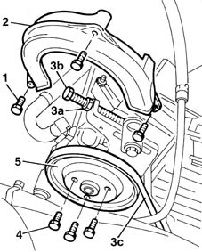
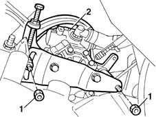
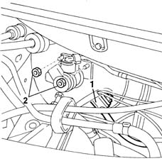
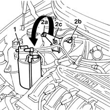
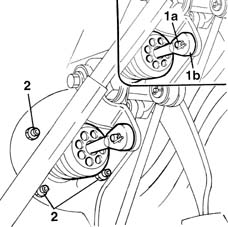
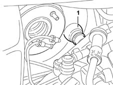
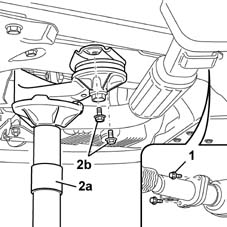
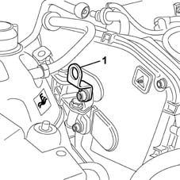
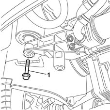
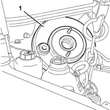

3330D18 brake servo r r for right hand drrive versions
- Path
- Procedures > 33 BRAKING SYSTEM > 3330 HYDRAULIC BRAKING SYSTEM > 3330D brake vacuum system > 3330D18 brake servo r r for right hand drrive versions
- Kind
- repair procedure (removal / refitting; the operation number is the code)
- Applies to
- all engines; all production periods
- Interactive page
- https://sloeber94.github.io/elrnDB-fMltpl/en/#/2891631
Applies to: engines: 1.6 16v; all production periods; only with equipment: Right hand drive
 Removing
Removing
 Refitting
Refitting1. Undo the retaining bolts.
2. Remove the power steering pump belt guard.
3. Unscrew nut (4a) and adjustment screw (4b) to slacken belt tension. Then remove belt (3c) from the power steering pump pulley.

Applies to: engines: 1.6 16v; all production periods; only with equipment: Right hand drive
1. Unscrew the retaining nuts.
2. Place the power assisted steering pump to the side without disconnecting the two pipes.

Applies to: engines: 1.6 16v; all production periods; only with equipment: Right hand drive
1. Disconnect the vacuum pump pipe from the single-acting valve on the brake servo.
2. Undo the fixing nuts and move the brake pump sideways, taking care not to bend or damage the pipes connected to it.

Applies to: engines: 1.6 16v; all production periods; only with equipment: Right hand drive
1. Release the active charcoal filter from the mounting bracket and place it at the side.
2. Loosen the nut (2a), undo the bolt (2b) and remove the active charcoal filter mounting bracket (2c).

Applies to: engines: 1.6 16v; all production periods; only with equipment: Right hand drive
1. Working from inside the vehicle, remove the clip (1a) and separate the brake servo rod (1b) from the brake pedal idler.
2. Undo the fixing nuts and, working via the engine compartment, remove the brake servo.

Applies to: engines: 1.6 16v; all production periods; only with equipment: Right hand drive
Refitting
RemovingFit the brake servo in the housing.
Tighten the nuts fixing the brake servo to the bodyshell to torque.
 | Fastening | Component | Ø | Value (daNm) |
|---|---|---|---|---|
- | Nut | BRAKE SERVO | M8 | (Brake servo with pedals) 2.2 |
Secure the rod for the brake servo to the pedal using the special retaining spring.
Tighten the nuts fixing the master cylinder to the brake servo
Connect the vacuum intake pipe.
Position the active charcoal filter mounting bracket correctly.
Tighten the bolt and the nut fixing the active charcoal filter mounting bracket.
Fit the power steering pump.
Screw in the power assisted steering pump nuts without tightening them to torque.
| Fastening | Component | Ø | Value (daNm) |
|---|---|---|---|---|
- | Nut | POWER STEERING PUMP | M10 | 5 |
Check belt condition.
Change the belt if necessary.
Fit the belt over the pulleys.
Applies to: engines: 1.9 JTD 8V; all production periods; only with equipment: Right hand drive
Removing
Refitting7055B54 under-engine guard - r r
Lower the vehicle and disconnect the negative battery lead.
1016A10 sound-proofing cover - r + r
1008C10 power unit upper reaction link r r
1008C16 body link bracket - r r
1044B10 fuel filter assembly - r + r or replace
3330C12 (PUMP) - MASTER CYLINDER R.R. for right hand drive versions
1. Working from inside the vehicle, remove the safety clip (1a) and separate the brake servo rod (1b) from the brake pedal idler.
2. Undo the nuts fixing the brake servo to the bodyshell.
Applies to: engines: 1.9 JTD 8V; all production periods; only with equipment: Right hand drive
1. Working in the engine compartment, disconnect the vacuum intake pipe from the single-acting valve on the brake servo.

Applies to: engines: 1.9 JTD 8V; all production periods; only with equipment: Right hand drive
1. Raise the vehicle and undo the two bolts fixing the exhaust pipe flange to the catalytic converter.
2. After having positioned a hydraulic jack, undo the two bolts fixing the power unit rear mounting, then lower the jack and remove it.

Applies to: engines: 1.9 JTD 8V; all production periods; only with equipment: Right hand drive
1. Lower the vehicle and secure a suitable bracket for supporting the power unit.

Applies to: engines: 1.9 JTD 8V; all production periods; only with equipment: Right hand drive
Secure a metal cable to the bracket and, with the help of a hydraulic hoist, tension the cable.
1. Working from underneath the vehicle, undo the bolt fixing the timing side support to the flexible mounting.

Applies to: engines: 1.9 JTD 8V; all production periods; only with equipment: Right hand drive
1. Lower the power unit and move it, as necessary, to allow the brake servo to be extracted.

Applies to: engines: 1.9 JTD 8V; all production periods; only with equipment: Right hand drive
Refitting
RemovingPlace the brake servo in the housing.
Correctly reposition the power unit and tighten the bolt fixing the timing side support to the recommended torque.
| Fastening | Component | Ø | Value (daNm) |
|---|---|---|---|---|
- | Bolt | ENGINE MOUNT TIMING SIDE | M12 x 1.25 | 8 |
Raise the vehicle and tighten the bolts fixing the power unit rear support mounting to the recommended torque.
| Fastening | Component | Ø | Value (daNm) |
|---|---|---|---|---|
- | Bolt | INTERM RUBBER MOUNT | M8 | 3.5 |
Tighten the bolts fixing the front section of the exhaust pipe to the catalytic converter flange
| Fastening | Component | Ø | Value (daNm) |
|---|---|---|---|---|
- | Bolt | FLEXIBLE PIPE SECTION TO ENGINE | M8 | 2.4 |
7055B54 under-engine guard - r r
Lower the vehicle and, working from inside the passenger compartment, tighten the nuts fixing the brake servo to the bodyshell to torque.
| Fastening | Component | Ø | Value (daNm) |
|---|---|---|---|---|
- | Nut | BRAKE SERVO | M8 | (Brake servo with pedals) 2.2 |
Secure the brake servo rod to the pedal using the special retaining clip.
Working in the engine compartment, connect the vacuum intake pipe.
3330C12 (PUMP) - MASTER CYLINDER R.R. for right hand drive versions
1008C16 body link bracket - r r
1008C10 power unit upper reaction link r r
1016A10 sound-proofing cover - r + r
3330A14 HYDRAULIC BRAKING SYSTEM - Bleed air
Connect the battery negative terminal.
Remove the vehicle from the ramp.
Topics linked from this page (8)
- 1008C10 power unit upper reaction link r r
- 1008C16 body link bracket - r r
- 1016A10 sound-proofing cover - r + r
- 1044B10 fuel filter assembly - r + r or replace
- 1092C12 power steering pump drive belt - adjust tension
- 3330A14 HYDRAULIC BRAKING SYSTEM - Bleed air
- 3330C12 (PUMP) - MASTER CYLINDER R.R. for right hand drive versions
- 7055B54 under-engine guard - r r